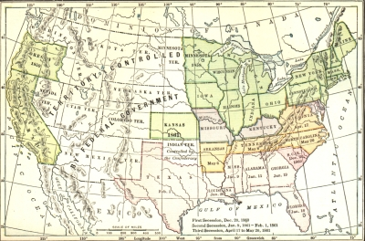
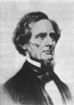
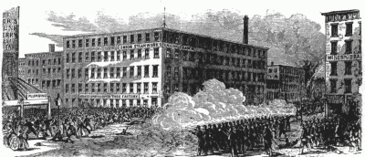
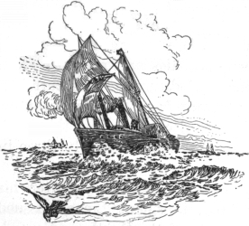
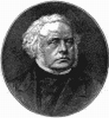
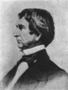
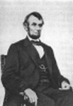
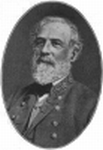
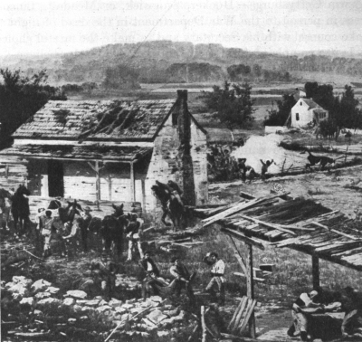

"The irrepressible conflict is about to be visited upon us through the Black Republican nominee and his fanatical, diabolical Republican party," ran an appeal to the voters of South Carolina during the campaign of 1860. If that calamity comes to pass, responded the governor of the state, the answer should be a declaration of independence. In a few days the suspense was over. The news of Lincoln's election came speeding along the wires. Prepared for the event, the editor of the Charleston Mercury unfurled the flag of his state amid wild cheers from an excited throng in the streets. Then he seized his pen and wrote: "The tea has been thrown overboard; the revolution of 1860 has been initiated." The issue was submitted to the voters in the choice of delegates to a state convention called to cast off the yoke of the Constitution.
The Southern Confederacy
Secession. —As arranged, the convention of South Carolina assembled in December and without a dissenting voice passed the ordinance of secession withdrawing from the union. Bells were rung exultantly, the roar of cannon carried the news to outlying counties, fireworks lighted up the heavens, and champagne flowed. The crisis so long expected had come at last; even the conservatives who had prayed that they might escape the dreadful crash greeted it with a sigh of relief.

The United States in 1861
The border states (in purple) remained loyal.
South Carolina now sent forth an appeal to her sister states—states that had in Jackson's day repudiated nullification as leading to "the dissolution of the union." The answer that came this time was in a different vein. A month had hardly elapsed before five other states—Florida, Georgia, Alabama, Mississippi, and Louisiana—had withdrawn from the union. In February, Texas followed. Virginia, hesitating until the bombardment of Fort Sumter forced a conclusion, seceded in April; but fifty-five of the one hundred and forty-three delegates dissented, foreshadowing the creation of the new state of West Virginia which Congress admitted to the union in 1863. In May, North Carolina, Arkansas, and Tennessee announced their independence.
Secession and the Theories of the Union. —In severing their relations with the union, the seceding states denied every point in the Northern theory of the Constitution. That theory, as every one knows, was carefully formulated by Webster and elaborated by Lincoln. According to it, the union was older than the states; it was created before the Declaration of Independence for the purpose of common defense. The Articles of Confederation did but strengthen this national bond and the Constitution sealed it forever. The federal government was not a creature of state governments. It was erected by the people and derived its powers directly from them. "It is," said Webster, "the people's Constitution, the people's government; made for the people; made by the people; and answerable to the people. The people of the United States have declared that this Constitution shall be the supreme law." When a state questions the lawfulness of any act of the federal government, it cannot nullify that act or withdraw from the union; it must abide by the decision of the Supreme Court of the United States. The union of these states is perpetual, ran Lincoln's simple argument in the first inaugural; the federal Constitution has no provision for its own termination; it can be destroyed only by some action not provided for in the instrument itself; even if it is a compact among all the states the consent of all must be necessary to its dissolution; therefore no state can lawfully get out of the union and acts of violence against the United States are insurrectionary or revolutionary. This was the system which he believed himself bound to defend by his oath of office
"registered in heaven."
All this reasoning Southern statesmen utterly rejected. In their opinion the thirteen original states won their independence as separate and sovereign powers. The treaty of peace with Great Britain named them all and acknowledged them "to be free, sovereign, and independent states." The Articles of Confederation very explicitly declared that "each state retains its sovereignty, freedom, and independence." The Constitution was a "league of nations" formed by an alliance of thirteen separate powers, each one of which ratified the instrument before it was put into effect. They voluntarily entered the union under the

Constitution and voluntarily they could leave it. Such was the constitutional doctrine of Hayne, Calhoun, and Jefferson Davis. In seceding, the Southern states had only to follow legal methods, and the transaction would be correct in every particular. So conventions were summoned, elections were held, and "sovereign assemblies of the people" set aside the Constitution in the same manner as it had been ratified nearly four score years before. Thus, said the Southern people, the moral judgment was fulfilled and the letter of the law carried into effect.
Jefferson Davis
The Formation of the Confederacy. —Acting on the call of Mississippi, a congress of delegates from the seceded states met at Montgomery, Alabama, and on February 8, 1861, adopted a temporary plan of union.
It selected, as provisional president, Jefferson Davis of Mississippi, a man well fitted by experience and moderation for leadership, a graduate of West Point, who had rendered distinguished service on the field of battle in the Mexican War, in public office, and as a member of Congress.
In March, a permanent constitution of the Confederate states was drafted. It was quickly ratified by the states; elections were held in November; and the government under it went into effect the next year. This new constitution, in form, was very much like the famous instrument drafted at Philadelphia in 1787. It provided for a President, a Senate, and a House of Representatives along almost identical lines. In the powers conferred upon them, however, there were striking differences. The right to appropriate money for internal improvements was expressly withheld; bounties were not to be granted from the treasury nor import duties so laid as to promote or foster any branch of industry. The dignity of the state, if any might be bold enough to question it, was safeguarded in the opening line by the declaration that each acted "in its sovereign and independent character" in forming the Southern union.
Financing the Confederacy. —No government ever set out upon its career with more perplexing tasks in front of it. The North had a monetary system; the South had to create one. The North had a scheme of taxation that produced large revenues from numerous sources; the South had to formulate and carry out a financial plan. Like the North, the Confederacy expected to secure a large revenue from customs duties, easily collected and little felt among the masses. To this expectation the blockade of Southern ports inaugurated by Lincoln in April, 1861, soon put an end. Following the precedent set by Congress under the Articles of Confederation, the Southern Congress resorted to a direct property tax apportioned among the states, only to meet the failure that might have been foretold.
The Confederacy also sold bonds, the first issue bringing into the treasury nearly all the specie available in the Southern banks. This specie by unhappy management was early sent abroad to pay for supplies, sapping the foundations of a sound currency system. Large amounts of bonds were sold overseas, commanding at first better terms than those of the North in the markets of London, Paris, and Amsterdam, many an English lord and statesman buying with enthusiasm and confidence to lament within a few years the proofs of his folly. The difficulties of bringing through the blockade any supplies purchased by foreign bond issues, however, nullified the effect of foreign credit and forced the Confederacy back upon the device of paper money. In all approximately one billion dollars streamed from the printing presses, to fall
in value at an alarming rate, reaching in January, 1863, the astounding figure of fifty dollars in paper money for one in gold. Every known device was used to prevent its depreciation, without result. To the issues of the Confederate Congress were added untold millions poured out by the states and by private banks.
Human and Material Resources. —When we measure strength for strength in those signs of power—men, money, and supplies—it is difficult to see how the South was able to embark on secession and war with such confidence in the outcome. In the Confederacy at the final reckoning there were eleven states in all, to be pitted against twenty-two; a population of nine millions, nearly one-half servile, to be pitted against twenty-two millions; a land without great industries to produce war supplies and without vast capital to furnish war finances, joined in battle with a nation already industrial and fortified by property worth eleven billion dollars. Even after the Confederate Congress authorized conscription in 1862, Southern man power, measured in numbers, was wholly inadequate to uphold the independence which had been declared. How, therefore, could the Confederacy hope to sustain itself against such a combination of men, money, and materials as the North could marshal?
Southern Expectations. —The answer to this question is to be found in the ideas that prevailed among Southern leaders. First of all, they hoped, in vain, to carry the Confederacy up to the Ohio River; and, with the aid of Missouri, to gain possession of the Mississippi Valley, the granary of the nation. In the second place, they reckoned upon a large and continuous trade with Great Britain—the exchange of cotton for war materials. They likewise expected to receive recognition and open aid from European powers that looked with satisfaction upon the breakup of the great American republic. In the third place, they believed that their control over several staples so essential to Northern industry would enable them to bring on an industrial crisis in the manufacturing states. "I firmly believe," wrote Senator Hammond, of South Carolina, in 1860, "that the slaveholding South is now the controlling power of the world; that no other power would face us in hostility. Cotton, rice, tobacco, and naval stores command the world; and we have the sense to know it and are sufficiently Teutonic to carry it out successfully. The North without us would be a motherless calf, bleating about, and die of mange and starvation."
There were other grounds for confidence. Having seized all of the federal military and naval supplies in the South, and having left the national government weak in armed power during their possession of the presidency, Southern leaders looked to a swift war, if it came at all, to put the finishing stroke to independence. "The greasy mechanics of the North," it was repeatedly said, "will not fight." As to disparity in numbers they drew historic parallels. "Our fathers, a mere handful, overcame the enormous power of Great Britain," a saying of ex-President Tyler, ran current to reassure the doubtful. Finally, and this point cannot be too strongly emphasized, the South expected to see a weakened and divided North. It knew that the abolitionists and the Southern sympathizers were ready to let the Confederate states go in peace; that Lincoln represented only a little more than one-third the voters of the country; and that the vote for Douglas, Bell, and Breckinridge meant a decided opposition to the Republicans and their policies.
Efforts at Compromise. —Republican leaders, on reviewing the same facts, were themselves uncertain as to the outcome of a civil war and made many efforts to avoid a crisis. Thurlow Weed, an Albany journalist and politician who had done much to carry New York for Lincoln, proposed a plan for extending the Missouri Compromise line to the Pacific. Jefferson Davis, warning his followers that a war if it came would be terrible, was prepared to accept the offer; but Lincoln, remembering his campaign pledges, stood firm as a rock against it. His followers in Congress took the same position with regard to a similar settlement suggested by Senator Crittenden of Kentucky.
Though unwilling to surrender his solemn promises respecting slavery in the territories, Lincoln was prepared to give to Southern leaders a strong guarantee that his administration would not interfere directly or indirectly with slavery in the states. Anxious to reassure the South on this point, the Republicans in Congress proposed to write into the Constitution a declaration that no amendment should ever be made

authorizing the abolition of or interference with slavery in any state. The resolution, duly passed, was sent forth on March 4, 1861, with the approval of Lincoln; it was actually ratified by three states before the storm of war destroyed it. By the irony of fate the thirteenth amendment was to abolish, not guarantee, slavery.
The War Measures of the Federal Government
Raising the Armies. —The crisis at Fort Sumter, on April 12-14, 1861, forced the President and Congress to turn from negotiations to problems of warfare. Little did they realize the magnitude of the task before them. Lincoln's first call for volunteers, issued on April 15, 1861, limited the number to 75,000, put their term of service at three months, and prescribed their duty as the enforcement of the law against combinations too powerful to be overcome by ordinary judicial process. Disillusionment swiftly followed.
The terrible defeat of the Federals at Bull Run on July 21 revealed the serious character of the task before them; and by a series of measures Congress put the entire man power of the country at the President's command. Under these acts, he issued new calls for volunteers. Early in August, 1862, he ordered a draft of militiamen numbering 300,000 for nine months' service. The results were disappointing—ominous—for only
about 87,000 soldiers were added to the army. Something more drastic was clearly necessary.
In March, 1863, Lincoln signed the inevitable draft law; it enrolled in the national forces liable to military duty all able-bodied male citizens and persons of foreign birth who had declared their intention to become citizens, between the ages of twenty and forty-five years—with exemptions on grounds of physical weakness and dependency. From the men enrolled were drawn by lot those destined to active service.
Unhappily the measure struck a mortal blow at the principle of universal liability by excusing any person who found a substitute for himself or paid into the war office a sum, not exceeding three hundred dollars, to be fixed by general order. This provision, so crass and so obviously favoring the well-to-do, sowed seeds of bitterness which sprang up a hundredfold in the North.
The Draft Riots in New York City
The beginning of the drawings under the draft act in New York City, on Monday, July 13, 1863, was the signal for four days of rioting. In the course of this uprising, draft headquarters were destroyed; the office of the Tribune was gutted; negroes were seized, hanged, and shot; the homes of obnoxious Unionists were burned down; the residence of the mayor of the city was attacked; and regular battles were fought in the streets between the rioters and the police. Business stopped and a large part of the city passed absolutely into the control of the mob. Not until late the following Wednesday did enough troops arrive to restore order and enable the residents of the city to resume their daily activities. At least a thousand people had been killed or wounded and more than a million dollars' worth of damage done to property. The draft temporarily interrupted by this outbreak was then resumed and carried out without further trouble.

The results of the draft were in the end distinctly disappointing to the government. The exemptions were numerous and the number who preferred and were able to pay $300 rather than serve exceeded all expectations. Volunteering, it is true, was stimulated, but even that resource could hardly keep the thinning ranks of the army filled. With reluctance Congress struck out the $300 exemption clause, but still favored the well-to-do by allowing them to hire substitutes if they could find them. With all this power in its hands the administration was able by January, 1865, to construct a union army that outnumbered the Confederates two to one.
War Finance. —In the financial sphere the North faced immense difficulties. The surplus in the treasury had been dissipated by 1861 and the tariff of 1857 had failed to produce an income sufficient to meet the ordinary expenses of the government. Confronted by military and naval expenditures of appalling magnitude, rising from $35,000,000 in the first year of the war to $1,153,000,000 in the last year, the administration had to tap every available source of income. The duties on imports were increased, not once but many times, producing huge revenues and also meeting the most extravagant demands of the manufacturers for protection. Direct taxes were imposed on the states according to their respective populations, but the returns were meager—all out of proportion to the irritation involved. Stamp taxes and taxes on luxuries, occupations, and the earnings of corporations were laid with a weight that, in ordinary times, would have drawn forth opposition of ominous strength. The whole gamut of taxation was run.
Even a tax on incomes and gains by the year, the first in the history of the federal government, was included in the long list.
Revenues were supplemented by bond issues, mounting in size and interest rate, until in October, at the end of the war, the debt stood at $2,208,000,000. The total cost of the war was many times the money value of all the slaves in the Southern states. To the debt must be added nearly half a billion dollars in
"greenbacks"—paper money issued by Congress in desperation as bond sales and revenues from taxes failed to meet the rising expenditures. This currency issued at par on questionable warrant from the Constitution, like all such paper, quickly began to decline until in the worst fortunes of 1864 one dollar in gold was worth nearly three in greenbacks.
A Blockade Runner
The Blockade of Southern Ports. —Four days after his call for volunteers, April 19, 1861, President Lincoln issued a proclamation blockading the ports of the Southern Confederacy. Later the blockade was extended to Virginia and North Carolina, as they withdrew from the union. Vessels attempting to enter or leave these ports, if they disregarded the warnings of a blockading ship, were to be captured and brought as prizes to the nearest convenient port. To make the order effective, immediate steps were taken to

increase the naval forces, depleted by neglect, until the entire coast line was patrolled with such a number of ships that it was a rare captain who ventured to run the gantlet. The collision between the Merrimac and the Monitor in March, 1862, sealed the fate of the Confederacy. The exploits of the union navy are recorded in the falling export of cotton: $202,000,000 in 1860; $42,000,000 in 1861; and $4,000,000 in 1862.
The deadly effect of this paralysis of trade upon Southern war power may be readily imagined. Foreign loans, payable in cotton, could be negotiated but not paid off. Supplies could be purchased on credit but not brought through the drag net. With extreme difficulty could the Confederate government secure even paper for the issue of money and bonds. Publishers, in despair at the loss of supplies, were finally driven to the use of brown wrapping paper and wall paper. As the railways and rolling stock wore out, it became impossible to renew them from England or France. Unable to export their cotton, planters on the seaboard burned it in what were called "fires of patriotism." In their lurid light the fatal weakness of Southern economy stood revealed.
Diplomacy. —The war had not advanced far before the federal government became involved in many perplexing problems of diplomacy in Europe. The Confederacy early turned to England and France for financial aid and for recognition as an independent power. Davis believed that the industrial crisis created by the cotton blockade would in time literally compel Europe to intervene in order to get this essential staple. The crisis came as he expected but not the result. Thousands of English textile workers were thrown out of employment; and yet, while on the point of starvation, they adopted resolutions favoring the North instead of petitioning their government to aid the South by breaking the blockade.
With the ruling classes it was far otherwise. Napoleon III, the Emperor of the French, was eager to help in disrupting the American republic; if he could have won England's support, he would have carried out his designs. As it turned out he found plenty of sympathy across the Channel but not open and official coöperation. According to the eminent historian, Rhodes, "four-fifths of the British House of Lords and most members of the House of Commons were favorable to the Confederacy and anxious for its triumph."
Late in 1862 the British ministers, thus sustained, were on the point of recognizing the independence of the Confederacy. Had it not been for their extreme caution, for the constant and harassing criticism by English friends of the United States—like John Bright—and for the victories of Vicksburg and Gettysburg, both England and France would have doubtless declared the Confederacy to be one of the independent powers of the earth.
John Bright
While stopping short of recognizing its independence, England and France took several steps that were in favor of the South. In proclaiming neutrality, they early accepted the Confederates as "belligerents" and accorded them the rights of people at war—a measure which aroused anger in the North at first but was later admitted to be sound. Otherwise Confederates taken in battle would have been regarded as "rebels" or
"traitors" to be hanged or shot. Napoleon III proposed to Russia in 1861 a coalition of powers against the North, only to meet a firm refusal. The next year he suggested intervention to Great Britain, encountering

this time a conditional rejection of his plans. In 1863, not daunted by rebuffs, he offered his services to Lincoln as a mediator, receiving in reply a polite letter declining his proposal and a sharp resolution from Congress suggesting that he attend to his own affairs.
In both England and France the governments pursued a policy of friendliness to the Confederate agents.
The British ministry, with indifference if not connivance, permitted rams and ships to be built in British docks and allowed them to escape to play havoc under the Confederate flag with American commerce.
One of them, the Alabama, built in Liverpool by a British firm and paid for by bonds sold in England, ran an extraordinary career and threatened to break the blockade. The course followed by the British government, against the protests of the American minister in London, was later regretted. By an award of a tribunal of arbitration at Geneva in 1872, Great Britain was required to pay the huge sum of $15,500,000
to cover the damages wrought by Confederate cruisers fitted out in England.
William H. Seward
In all fairness it should be said that the conduct of the North contributed to the irritation between the two countries. Seward, the Secretary of State, was vindictive in dealing with Great Britain; had it not been for the moderation of Lincoln, he would have pursued a course verging in the direction of open war. The New York and Boston papers were severe in their attacks on England. Words were, on one occasion at least, accompanied by an act savoring of open hostility. In November, 1861, Captain Wilkes, commanding a union vessel, overhauled the British steamer Trent, and carried off by force two Confederate agents, Mason and Slidell, sent by President Davis to represent the Confederacy at London and Paris respectively.
This was a clear violation of the right of merchant vessels to be immune from search and impressment; and, in answer to the demand of Great Britain for the release of the two men, the United States conceded that it was in the wrong. It surrendered the two Confederate agents to a British vessel for safe conduct abroad, and made appropriate apologies.
Emancipation. —Among the extreme war measures adopted by the Northern government must be counted the emancipation of the slaves in the states in arms against the union. This step was early and repeatedly suggested to Lincoln by the abolitionists; but was steadily put aside. He knew that the abolitionists were a mere handful, that emancipation might drive the border states into secession, and that the Northern soldiers had enlisted to save the union. Moreover, he had before him a solemn resolution passed by Congress on July 22, 1861, declaring the sole purpose of the war to be the salvation of the union and disavowing any intention of interfering with slavery.
The federal government, though pledged to the preservation of slavery, soon found itself beaten back upon its course and out upon a new tack. Before a year had elapsed, namely on April 10, 1862, Congress resolved that financial aid should be given to any state that might adopt gradual emancipation. Six days later it abolished slavery in the District of Columbia. Two short months elapsed. On June 19, 1862, it swept slavery forever from the territories of the United States. Chief Justice Taney still lived, the Dred Scott decision stood as written in the book, but the Constitution had been re-read in the light of the Civil War. The drift of public sentiment in the North was being revealed.

While these measures were pending in Congress, Lincoln was slowly making up his mind. By July of that year he had come to his great decision. Near the end of that month he read to his cabinet the draft of a proclamation of emancipation; but he laid it aside until a military achievement would make it something more than an idle gesture. In September, the severe check administered to Lee at Antietam seemed to offer the golden opportunity. On the 22d, the immortal document was given to the world announcing that, unless the states in arms returned to the union by January 1, 1863, the fatal blow at their "peculiar institution" would be delivered. Southern leaders treated it with slight regard, and so on the date set the promise was fulfilled. The proclamation was issued as a war measure, adopted by the President as commander-in-chief of the armed forces, on grounds of military necessity. It did not abolish slavery. It simply emancipated slaves in places then in arms against federal authority. Everywhere else slavery, as far as the Proclamation was concerned, remained lawful.
Abraham Lincoln
To seal forever the proclamation of emancipation, and to extend freedom to the whole country, Congress, in January, 1865, on the urgent recommendation of Lincoln, transmitted to the states the thirteenth amendment, abolishing slavery throughout the United States. By the end of 1865 the amendment was ratified. The house was not divided against itself; it did not fall; it was all free.
The Restraint of Civil Liberty. —As in all great wars, particularly those in the nature of a civil strife, it was found necessary to use strong measures to sustain opinion favorable to the administration's military policies and to frustrate the designs of those who sought to hamper its action. Within two weeks of his first call for volunteers, Lincoln empowered General Scott to suspend the writ of habeas corpus along the line of march between Philadelphia and Washington and thus to arrest and hold without interference from civil courts any one whom he deemed a menace to the union. At a later date the area thus ruled by military officers was extended by executive proclamation. By an act of March 3, 1863, Congress, desiring to lay all doubts about the President's power, authorized him to suspend the writ throughout the United States or in any part thereof. It also freed military officers from the necessity of surrendering to civil courts persons arrested under their orders, or even making answers to writs issued from such courts. In the autumn of that year the President, acting under the terms of this law, declared this ancient and honorable instrument for the protection of civil liberties, the habeas corpus, suspended throughout the length and breadth of the land. The power of the government was also strengthened by an act defining and punishing certain conspiracies, passed on July 31, 1861—a measure which imposed heavy penalties on those who by force, intimidation, or threat interfered with the execution of the law.
Thus doubly armed, the military authorities spared no one suspected of active sympathy with the Southern cause. Editors were arrested and imprisoned, their papers suspended, and their newsboys locked up. Those who organized "peace meetings" soon found themselves in the toils of the law. Members of the Maryland legislature, the mayor of Baltimore, and local editors suspected of entertaining secessionist opinions, were imprisoned on military orders although charged with no offense, and were denied the privilege of examination before a civil magistrate. A Vermont farmer, too outspoken in his criticism of the government, found himself behind the bars until the government, in its good pleasure, saw fit to release
him. These measures were not confined to the theater of war nor to the border states where the spirit of secession was strong enough to endanger the cause of union. They were applied all through the Northern states up to the very boundaries of Canada. Zeal for the national cause, too often supplemented by a zeal for persecution, spread terror among those who wavered in the singleness of their devotion to the union.
These drastic operations on the part of military authorities, so foreign to the normal course of civilized life, naturally aroused intense and bitter hostility. Meetings of protest were held throughout the country. Thirty-six members of the House of Representatives sought to put on record their condemnation of the suspension of the habeas corpus act, only to meet a firm denial by the supporters of the act. Chief Justice Taney, before whom the case of a man arrested under the President's military authority was brought, emphatically declared, in a long and learned opinion bristling with historical examples, that the President had no power to suspend the writ of habeas corpus. In Congress and out, Democrats, abolitionists, and champions of civil liberty denounced Lincoln and his Cabinet in unsparing terms. Vallandigham, a Democratic leader of Ohio, afterward banished to the South for his opposition to the war, constantly applied to Lincoln the epithet of "Cæsar." Wendell Phillips saw in him "a more unlimited despot than the world knows this side of China."
Sensitive to such stinging thrusts and no friend of wanton persecution, Lincoln attempted to mitigate the rigors of the law by paroling many political prisoners. The general policy, however, he defended in homely language, very different in tone and meaning from the involved reasoning of the lawyers. "Must I shoot a simple-minded soldier boy who deserts, while I must not touch a hair of the wily agitator who induces him to desert?" he asked in a quiet way of some spokesmen for those who protested against arresting people for "talking against the war." This summed up his philosophy. He was engaged in a war to save the union, and all measures necessary and proper to accomplish that purpose were warranted by the Constitution which he had sworn to uphold.
Military Strategy—North and South. —The broad outlines of military strategy followed by the commanders of the opposing forces are clear even to the layman who cannot be expected to master the details of a campaign or, for that matter, the maneuvers of a single great battle. The problem for the South was one of defense mainly, though even for defense swift and paralyzing strokes at the North were later deemed imperative measures. The problem of the North was, to put it baldly, one of invasion and conquest. Southern territory had to be invaded and Southern armies beaten on their own ground or worn down to exhaustion there.
In the execution of this undertaking, geography, as usual, played a significant part in the disposition of forces. The Appalachian ranges, stretching through the Confederacy to Northern Alabama, divided the campaigns into Eastern and Western enterprises. Both were of signal importance. Victory in the East promised the capture of the Confederate capital of Richmond, a stroke of moral worth, hardly to be overestimated. Victory in the West meant severing the Confederacy and opening the Mississippi Valley down to the Gulf.
As it turned out, the Western forces accomplished their task first, vindicating the military powers of union soldiers and shaking the confidence of opposing commanders. In February, 1862, Grant captured Fort Donelson on the Tennessee River, rallied wavering unionists in Kentucky, forced the evacuation of Nashville, and opened the way for two hundred miles into the Confederacy. At Shiloh, Murfreesboro, Vicksburg, Chickamauga, Chattanooga, desperate fighting followed and, in spite of varying fortunes, it resulted in the discomfiture and retirement of Confederate forces to the Southeast into Georgia. By the middle of 1863, the Mississippi Valley was open to the Gulf, the initiative taken out of the hands of Southern commanders in the West, and the way prepared for Sherman's final stroke—the march from Atlanta to the sea—a maneuver executed with needless severity in the autumn of 1864.


General Ulysses S. Grant
General Robert E. Lee
For the almost unbroken succession of achievements in the West by Generals Grant, Sherman, Thomas, and Hooker against Albert Sidney Johnston, Bragg, Pemberton, and Hood, the union forces in the East offered at first an almost equally unbroken series of misfortunes and disasters. Far from capturing Richmond, they had been thrown on the defensive. General after general—McClellan, Pope, Burnside, Hooker, and Meade—was tried and found wanting. None of them could administer a crushing defeat to the Confederate troops and more than once the union soldiers were beaten in a fair battle. They did succeed, however, in delivering a severe check to advancing Confederates under General Robert E. Lee, first at Antietam in September, 1862, and then at Gettysburg in July, 1863—checks reckoned as victories though in each instance the Confederates escaped without demoralization. Not until the beginning of the next year, when General Grant, supplied with almost unlimited men and munitions, began his irresistible hammering at Lee's army, did the final phase of the war commence. The pitiless drive told at last. General Lee, on April 9, 1865, seeing the futility of further conflict, surrendered an army still capable of hard fighting, at Appomattox, not far from the capital of the Confederacy.
Copyright by Underwood and Underwood, N.Y.
The Federal Military Hospital at Gettysburg
Abraham Lincoln. —The services of Lincoln to the cause of union defy description. A judicial scrutiny of the war reveals his thought and planning in every part of the varied activity that finally crowned Northern arms with victory. Is it in the field of diplomacy? Does Seward, the Secretary of State, propose harsh and caustic measures likely to draw England's sword into the scale? Lincoln counsels moderation. He takes the irritating message and with his own hand strikes out, erases, tones down, and interlines, exchanging for words that sting and burn the language of prudence and caution. Is it a matter of compromise with the South, so often proposed by men on both sides sick of carnage? Lincoln is always ready to listen and turns away only when he is invited to surrender principles essential to the safety of the union. Is it high strategy of war, a question of the general best fitted to win Gettysburg—Hooker, Sedgwick, or Meade? Lincoln goes in person to the War Department in the dead of night to take counsel with his Secretary and to make the fateful choice.
Is it a complaint from a citizen, deprived, as he believes, of his civil liberties unjustly or in violation of the Constitution? Lincoln is ready to hear it and anxious to afford relief, if warrant can be found for it. Is a mother begging for the life of a son sentenced to be shot as a deserter? Lincoln hears her petition, and grants it even against the protests made by his generals in the name of military discipline. Do politicians sow dissensions in the army and among civilians? Lincoln grandly waves aside their petty personalities and invites them to think of the greater cause. Is it a question of securing votes to ratify the thirteenth amendment abolishing slavery? Lincoln thinks it not beneath his dignity to traffic and huckster with politicians over the trifling jobs asked in return by the members who hold out against him. Does a New York newspaper call him an ignorant Western boor? Lincoln's reply is a letter to a mother who has given her all—her sons on the field of battle—and an address at Gettysburg, both of which will live as long as the tongue in which they were written. These are tributes not only to his mastery of the English language but also to his mastery of all those sentiments of sweetness and strength which are the finest flowers of culture.
Throughout the entire span of service, however, Lincoln was beset by merciless critics. The fiery apostles of abolition accused him of cowardice when he delayed the bold stroke at slavery. Anti-war Democrats lashed out at every step he took. Even in his own party he found no peace. Charles Sumner complained:
"Our President is now dictator, imperator—whichever you like; but how vain to have the power of a god and not to use it godlike." Leaders among the Republicans sought to put him aside in 1864 and place Chase in his chair. "I hope we may never have a worse man," was Lincoln's quiet answer.
Wide were the dissensions in the North during that year and the Republicans, while selecting Lincoln as their candidate again, cast off their old name and chose the simple title of the "Union party." Moreover, they selected a Southern man, Andrew Johnson, of Tennessee, to be associated with him as candidate for Vice President. This combination the Northern Democrats boldly confronted with a platform declaring that
"after four years of failure to restore the union by the experiment of war, during which, under the pretence of military necessity or war power higher than the Constitution, the Constitution itself has been disregarded in every part and public liberty and private right alike trodden down ... justice, humanity, liberty, and public welfare demand that immediate efforts be made for a cessation of hostilities, to the end that peace may be restored on the basis of the federal union of the states." It is true that the Democratic candidate, General McClellan, sought to break the yoke imposed upon him by the platform, saying that he could not look his old comrades in the face and pronounce their efforts vain; but the party call to the nation to repudiate Lincoln and his works had gone forth. The response came, giving Lincoln 2,200,000 votes against 1,800,000 for his opponent. The bitter things said about him during the campaign, he forgot and forgave. When in April, 1865, he was struck down by the assassin's hand, he above all others in Washington was planning measures of moderation and healing.
The Results of the Civil War
There is a strong and natural tendency on the part of writers to stress the dramatic and heroic aspects of war; but the long judgment of history requires us to include all other significant phases as well. Like every great armed conflict, the Civil War outran the purposes of those who took part in it. Waged over the nature of the union, it made a revolution in the union, changing public policies and constitutional principles and giving a new direction to agriculture and industry.
The Supremacy of the Union. —First and foremost, the war settled for all time the long dispute as to the nature of the federal system. The doctrine of state sovereignty was laid to rest. Men might still speak of the rights of states and think of their commonwealths with affection, but nullification and secession were destroyed. The nation was supreme.
The Destruction of the Slave Power. —Next to the vindication of national supremacy was the destruction of the planting aristocracy of the South—that great power which had furnished leadership of undoubted ability and had so long contested with the industrial and commercial interests of the North. The first paralyzing blow at the planters was struck by the abolition of slavery. The second and third came with the fourteenth (1868) and fifteenth (1870) amendments, giving the ballot to freedmen and excluding from public office the Confederate leaders—driving from the work of reconstruction the finest talents of the South. As if to add bitterness to gall and wormwood, the fourteenth amendment forbade the United States or any state to pay any debts incurred in aid of the Confederacy or in the emancipation of the slaves—plunging into utter bankruptcy the Southern financiers who had stripped their section of capital to support their cause. So the Southern planters found themselves excluded from public office and ruled over by their former bondmen under the tutelage of Republican leaders. Their labor system was wrecked and their money and bonds were as worthless as waste paper. The South was subject to the North. That which neither the Federalists nor the Whigs had been able to accomplish in the realm of statecraft was accomplished on the field of battle.
The Triumph of Industry. —The wreck of the planting system was accompanied by a mighty upswing of Northern industry which made the old Whigs of Massachusetts and Pennsylvania stare in wonderment.
The demands of the federal government for manufactured goods at unrestricted prices gave a stimulus to business which more than replaced the lost markets of the South. Between 1860 and 1870 the number of manufacturing establishments increased 79.6 per cent as against 14.2 for the previous decade; while the number of persons employed almost doubled. There was no doubt about the future of American industry.
The Victory for the Protective Tariff. —Moreover, it was henceforth to be well protected. For many years before the war the friends of protection had been on the defensive. The tariff act of 1857 imposed duties so low as to presage a tariff for revenue only. The war changed all that. The extraordinary military expenditures, requiring heavy taxes on all sources, justified tariffs so high that a follower of Clay or Webster might well have gasped with astonishment. After the war was over the debt remained and both interest and principal had to be paid. Protective arguments based on economic reasoning were supported by a plain necessity for revenue which admitted no dispute.
A Liberal Immigration Policy. —Linked with industry was the labor supply. The problem of manning industries became a pressing matter, and Republican leaders grappled with it. In the platform of the Union party adopted in 1864 it was declared "that foreign immigration, which in the past has added so much to the wealth, the development of resources, and the increase of power to this nation—the asylum of the oppressed of all nations—should be fostered and encouraged by a liberal and just policy." In that very year Congress, recognizing the importance of the problem, passed a measure of high significance, creating a bureau of immigration, and authorizing a modified form of indentured labor, by making it legal for immigrants to pledge their wages in advance to pay their passage over. Though the bill was soon repealed, the practice authorized by it was long continued. The cheapness of the passage shortened the term of service; but the principle was older than the days of William Penn.
The Homestead Act of 1862. —In the immigration measure guaranteeing a continuous and adequate labor supply, the manufacturers saw an offset to the Homestead Act of 1862 granting free lands to settlers. The Homestead law they had resisted in a long and bitter congressional battle. Naturally, they had not taken kindly to a scheme which lured men away from the factories or enabled them to make unlimited demands for higher wages as the price of remaining. Southern planters likewise had feared free homesteads for the very good reason that they only promised to add to the overbalancing power of the North.
In spite of the opposition, supporters of a liberal land policy made steady gains. Free-soil Democrats,—Jacksonian farmers and mechanics,—labor reformers, and political leaders, like Stephen A.
Douglas of Illinois and Andrew Johnson of Tennessee, kept up the agitation in season and out. More than once were they able to force a homestead bill through the House of Representatives only to have it blocked in the Senate where Southern interests were intrenched. Then, after the Senate was won over, a Democratic President, James Buchanan, vetoed the bill. Still the issue lived. The Republicans, strong among the farmers of the Northwest, favored it from the beginning and pressed it upon the attention of the country. Finally the manufacturers yielded; they received their compensation in the contract labor law. In 1862 Congress provided for the free distribution of land in 160-acre lots among men and women of strong arms and willing hearts ready to build their serried lines of homesteads to the Rockies and beyond.
Internal Improvements. —If farmers and manufacturers were early divided on the matter of free homesteads, the same could hardly be said of internal improvements. The Western tiller of the soil was as eager for some easy way of sending his produce to market as the manufacturer was for the same means to transport his goods to the consumer on the farm. While the Confederate leaders were writing into their constitution a clause forbidding all appropriations for internal improvements, the Republican leaders at Washington were planning such expenditures from the treasury in the form of public land grants to railways as would have dazed the authors of the national road bill half a century earlier.
Sound Finance—National Banking. —From Hamilton's day to Lincoln's, business men in the East had contended for a sound system of national currency. The experience of the states with paper money, painfully impressive in the years before the framing of the Constitution, had been convincing to those who understood the economy of business. The Constitution, as we have seen, bore the signs of this experience.
States were forbidden to emit bills of credit: paper money, in short. This provision stood clear in the document; but judicial ingenuity had circumvented it in the age of Jacksonian Democracy. The states had enacted and the Supreme Court, after the death of John Marshall, had sustained laws chartering banking companies and authorizing them to issue paper money. So the country was beset by the old curse, the banks of Western and Southern states issuing reams of paper notes to help borrowers pay their debts.
In dealing with war finances, the Republicans attacked this ancient evil. By act of Congress in 1864, they authorized a series of national banks founded on the credit of government bonds and empowered to issue notes. The next year they stopped all bank paper sent forth under the authority of the states by means of a prohibitive tax. In this way, by two measures Congress restored federal control over the monetary system although it did not reëstablish the United States Bank so hated by Jacksonian Democracy.
Destruction of States' Rights by Fourteenth Amendment. —These acts and others not cited here were measures of centralization and consolidation at the expense of the powers and dignity of the states. They were all of high import, but the crowning act of nationalism was the fourteenth amendment which, among other things, forbade states to "deprive any person of life, liberty or property without due process of law."
The immediate occasion, though not the actual cause of this provision, was the need for protecting the rights of freedmen against hostile legislatures in the South. The result of the amendment, as was prophesied in protests loud and long from every quarter of the Democratic party, was the subjection of every act of state, municipal, and county authorities to possible annulment by the Supreme Court at Washington. The expected happened.
Few negroes ever brought cases under the fourteenth amendment to the attention of the courts; but thousands of state laws, municipal ordinances, and acts of local authorities were set aside as null and void under it. Laws of states regulating railway rates, fixing hours of labor in bakeshops, and taxing corporations were in due time to be annulled as conflicting with an amendment erroneously supposed to be designed solely for the protection of negroes. As centralized power over tariffs, railways, public lands, and other national concerns went to Congress, so centralized power over the acts of state and local authorities involving an infringement of personal and property rights was conferred on the federal judiciary, the apex of which was the Supreme Court at Washington. Thus the old federation of "independent states," all equal in rights and dignity, each wearing the "jewel of sovereignty" so celebrated in Southern oratory, had gone the way of all flesh under the withering blasts of Civil War.
Reconstruction in the South
Theories about the Position of the Seceded States. —On the morning of April 9, 1865, when General Lee surrendered his army to General Grant, eleven states stood in a peculiar relation to the union now declared perpetual. Lawyers and political philosophers were much perturbed and had been for some time as to what should be done with the members of the former Confederacy. Radical Republicans held that they were "conquered provinces" at the mercy of Congress, to be governed under such laws as it saw fit to enact and until in its wisdom it decided to readmit any or all of them to the union. Men of more conservative views held that, as the war had been waged by the North on the theory that no state could secede from the union, the Confederate states had merely attempted to withdraw and had failed. The corollary of this latter line of argument was simple: "The Southern states are still in the union and it is the duty of the President, as commander-in-chief, to remove the federal troops as soon as order is restored and the state governments ready to function once more as usual."
Lincoln's Proposal. —Some such simple and conservative form of reconstruction had been suggested by Lincoln in a proclamation of December 8, 1863. He proposed pardon and a restoration of property, except in slaves, to nearly all who had "directly or by implication participated in the existing rebellion," on condition that they take an oath of loyalty to the union. He then announced that when, in any of the states named, a body of voters, qualified under the law as it stood before secession and equal in number to one-tenth the votes cast in 1860, took the oath of allegiance, they should be permitted to reëstablish a state government. Such a government, he added, should be recognized as a lawful authority and entitled to protection under the federal Constitution. With reference to the status of the former slaves Lincoln made it clear that, while their freedom must be recognized, he would not object to any legislation "which may yet be consistent as a temporary arrangement with their present condition as a laboring, landless, and homeless class."
Andrew Johnson's Plan—His Impeachment. —Lincoln's successor, Andrew Johnson, the Vice President, soon after taking office, proposed to pursue a somewhat similar course. In a number of states he appointed military governors, instructing them at the earliest possible moment to assemble conventions, chosen "by that portion of the people of the said states who are loyal to the United States," and proceed to the organization of regular civil government. Johnson, a Southern man and a Democrat, was immediately charged by the Republicans with being too ready to restore the Southern states. As the months went by, the opposition to his measures and policies in Congress grew in size and bitterness. The contest resulted in the impeachment of Johnson by the House of Representatives in March, 1868, and his acquittal by the Senate merely because his opponents lacked one vote of the two-thirds required for conviction.
Congress Enacts "Reconstruction Laws." —In fact, Congress was in a strategic position. It was the lawmaking body, and it could, moreover, determine the conditions under which Senators and Representatives from the South were to be readmitted. It therefore proceeded to pass a series of reconstruction acts—carrying all of them over Johnson's veto. These measures, the first of which became a law on March
2, 1867, betrayed an animus not found anywhere in Lincoln's plans or Johnson's proclamations.
They laid off the ten states—the whole Confederacy with the exception of Tennessee—still outside the pale, into five military districts, each commanded by a military officer appointed by the President. They ordered the commanding general to prepare a register of voters for the election of delegates to conventions chosen for the purpose of drafting new constitutions. Such voters, however, were not to be, as Lincoln had suggested, loyal persons duly qualified under the law existing before secession but "the male citizens of said state, twenty-one years old and upward, of whatever race, color, or previous condition, ... except such as may be disfranchised for participation in the rebellion or for felony at common law." This was the death knell to the idea that the leaders of the Confederacy and their white supporters might be permitted to share in the establishment of the new order. Power was thus arbitrarily thrust into the hands of the newly emancipated male negroes and the handful of whites who could show a record of loyalty. That was not all.
Each state was, under the reconstruction acts, compelled to ratify the fourteenth amendment to the federal Constitution as a price of restoration to the union.
The composition of the conventions thus authorized may be imagined. Bondmen without the asking and without preparation found themselves the governing power. An army of adventurers from the North,
"carpet baggers" as they were called, poured in upon the scene to aid in "reconstruction." Undoubtedly many men of honor and fine intentions gave unstinted service, but the results of their deliberations only aggravated the open wound left by the war. Any number of political doctors offered their prescriptions; but no effective remedy could be found. Under measures admittedly open to grave objections, the Southern states were one after another restored to the union by the grace of Congress, the last one in 1870. Even this grudging concession of the formalities of statehood did not mean a full restoration of honors and privileges. The last soldier was not withdrawn from the last Southern capital until 1877, and federal control over elections long remained as a sign of congressional supremacy.
The Status of the Freedmen. —Even more intricate than the issues involved in restoring the seceded states to the union was the question of what to do with the newly emancipated slaves. That problem, often put to abolitionists before the war, had become at last a real concern. The thirteenth amendment abolishing slavery had not touched it at all. It declared bondmen free, but did nothing to provide them with work or homes and did not mention the subject of political rights. All these matters were left to the states, and the legislatures of some of them, by their famous "black codes," restored a form of servitude under the guise of vagrancy and apprentice laws. Such methods were in fact partly responsible for the reaction that led Congress to abandon Lincoln's policies and undertake its own program of reconstruction.
Still no extensive effort was made to solve by law the economic problems of the bondmen. Radical abolitionists had advocated that the slaves when emancipated should be given outright the fields of their former masters; but Congress steadily rejected the very idea of confiscation. The necessity of immediate assistance it recognized by creating in 1865 the Freedmen's Bureau to take care of refugees. It authorized the issue of food and clothing to the destitute and the renting of abandoned and certain other lands under federal control to former slaves at reasonable rates. But the larger problem of the relation of the freedmen to the land, it left to the slow working of time.
Against sharp protests from conservative men, particularly among the Democrats, Congress did insist, however, on conferring upon the freedmen certain rights by national law. These rights fell into broad divisions, civil and political. By an act passed in 1866, Congress gave to former slaves the rights of white citizens in the matter of making contracts, giving testimony in courts, and purchasing, selling, and leasing property. As it was doubtful whether Congress had the power to enact this law, there was passed and submitted to the states the fourteenth amendment which gave citizenship to the freedmen, assured them of the privileges and immunities of citizens of the United States, and declared that no state should deprive any person of his life, liberty, or property without due process of law. Not yet satisfied, Congress attempted to give social equality to negroes by the second civil rights bill of 1875 which promised to them,
among other things, the full and equal enjoyment of inns, theaters, public conveyances, and places of amusement—a law later declared unconstitutional by the Supreme Court.
The matter of political rights was even more hotly contested; but the radical Republicans, like Charles Sumner, asserted that civil rights were not secure unless supported by the suffrage. In this same fourteenth amendment they attempted to guarantee the ballot to all negro men, leaving the women to take care of themselves. The amendment declared in effect that when any state deprived adult male citizens of the right to vote, its representation in Congress should be reduced in the proportion such persons bore to the voting population.
This provision having failed to accomplish its purpose, the fifteenth amendment was passed and ratified, expressly declaring that no citizen should be deprived of the right to vote "on account of race, color, or previous condition of servitude." To make assurance doubly secure, Congress enacted in 1870, 1872, and 1873 three drastic laws, sometimes known as "force bills," providing for the use of federal authorities, civil and military, in supervising elections in all parts of the Union. So the federal government, having destroyed chattel slavery, sought by legal decree to sweep away all its signs and badges, civil, social, and political. Never, save perhaps in some of the civil conflicts of Greece or Rome, had there occurred in the affairs of a nation a social revolution so complete, so drastic, and far-reaching in its results.
Summary of the Sectional Conflict
Just as the United States, under the impetus of Western enterprise, rounded out the continental domain, its very existence as a nation was challenged by a fratricidal conflict between two sections. This storm had been long gathering upon the horizon. From the very beginning in colonial times there had been a marked difference between the South and the North. The former by climate and soil was dedicated to a planting system—the cultivation of tobacco, rice, cotton, and sugar cane—and in the course of time slave labor became the foundation of the system. The North, on the other hand, supplemented agriculture by commerce, trade, and manufacturing. Slavery, though lawful, did not flourish there. An abundant supply of free labor kept the Northern wheels turning.
This difference between the two sections, early noted by close observers, was increased with the advent of the steam engine and the factory system. Between 1815 and 1860 an industrial revolution took place in the North. Its signs were gigantic factories, huge aggregations of industrial workers, immense cities, a flourishing commerce, and prosperous banks. Finding an unfavorable reception in the South, the new industrial system was confined mainly to the North. By canals and railways New York, Boston, and Philadelphia were linked with the wheatfields of Ohio, Indiana, and Illinois. A steel net wove North and Northwest together. A commercial net supplemented it. Western trade was diverted from New Orleans to the East and Eastern credit sustained Western enterprise.
In time, the industrial North and the planting South evolved different ideas of political policy. The former looked with favor on protective tariffs, ship subsidies, a sound national banking system, and internal improvements. The farmers of the West demanded that the public domain be divided up into free homesteads for farmers. The South steadily swung around to the opposite view. Its spokesmen came to regard most of these policies as injurious to the planting interests.
The economic questions were all involved in a moral issue. The Northern states, in which slavery was of slight consequence, had early abolished the institution. In the course of a few years there appeared uncompromising advocates of universal emancipation. Far and wide the agitation spread. The South was thoroughly frightened. It demanded protection against the agitators, the enforcement of its rights in the case of runaway slaves, and equal privileges for slavery in the new territories.
With the passing years the conflict between the two sections increased in bitterness. It flamed up in 1820
and was allayed by the Missouri compromise. It took on the form of a tariff controversy and nullification in 1832. It appeared again after the Mexican war when the question of slavery in the new territories was raised. Again compromise—the great settlement of 1850—seemed to restore peace, only to prove an illusion. A series of startling events swept the country into war: the repeal of the Missouri compromise in 1854, the rise of the Republican party pledged to the prohibition of slavery in the territories, the Dred Scott decision of 1857, the Lincoln-Douglas debates, John Brown's raid, the election of Lincoln, and secession.
The Civil War, lasting for four years, tested the strength of both North and South, in leadership, in finance, in diplomatic skill, in material resources, in industry, and in armed forces. By the blockade of Southern ports, by an overwhelming weight of men and materials, and by relentless hammering on the field of battle, the North was victorious.
The results of the war were revolutionary in character. Slavery was abolished and the freedmen given the ballot. The Southern planters who had been the leaders of their section were ruined financially and almost to a man excluded from taking part in political affairs. The union was declared to be perpetual and the right of a state to secede settled by the judgment of battle. Federal control over the affairs of states, counties, and cities was established by the fourteenth amendment. The power and prestige of the federal government were enhanced beyond imagination. The North was now free to pursue its economic policies: a protective tariff, a national banking system, land grants for railways, free lands for farmers. Planting had dominated the country for nearly a generation. Business enterprise was to take its place.
References
Northern Accounts
J.K. Hosmer, The Appeal to Arms and The Outcome of the Civil War (American Nation Series).
J. Ropes, History of the Civil War (best account of military campaigns).
J.F. Rhodes, History of the United States, Vols. III, IV, and V.
J.T. Morse, Abraham Lincoln (2 vols.).
Southern Accounts
W.E. Dodd, Jefferson Davis.
Jefferson Davis, Rise and Fall of the Confederate Government.
E. Pollard, The Lost Cause.
A.H. Stephens, The War between the States.
Questions
1. Contrast the reception of secession in 1860 with that given to nullification in 1832.
2. Compare the Northern and Southern views of the union.
3. What were the peculiar features of the Confederate constitution?
4. How was the Confederacy financed?
5. Compare the resources of the two sections.
6. On what foundations did Southern hopes rest?
7. Describe the attempts at a peaceful settlement.
8. Compare the raising of armies for the Civil War with the methods employed in the World War. (See below, chapter xxv.)
9. Compare the financial methods of the government in the two wars.
10. Explain why the blockade was such a deadly weapon.
11. Give the leading diplomatic events of the war.
12. Trace the growth of anti-slavery sentiment.
13. What measures were taken to restrain criticism of the government?
14. What part did Lincoln play in all phases of the war?
15. State the principal results of the war.
16. Compare Lincoln's plan of reconstruction with that adopted by Congress.
17. What rights did Congress attempt to confer upon the former slaves?
Research Topics
Was Secession Lawful? —The Southern view by Jefferson Davis in Harding, Select Orations Illustrating American History, pp. 364-369. Lincoln's view, Harding, pp. 371-381.
The Confederate Constitution. —Compare with the federal Constitution in Macdonald, Documentary Source Book, pp. 424-433 and pp. 271-279.
Federal Legislative Measures. —Prepare a table and brief digest of the important laws relating to the war.
Macdonald, pp. 433-482.
Economic Aspects of the War. —Coman, Industrial History of the United States, pp. 279-301. Dewey, Financial History of the United States, Chaps. XII and XIII. Tabulate the economic measures of Congress in Macdonald.
Military Campaigns. —The great battles are fully treated in Rhodes, History of the Civil War, and teachers desiring to emphasize military affairs may assign campaigns to members of the class for study and report. A briefer treatment in Elson, History of the United States, pp. 641-785.
Biographical Studies. —Lincoln, Davis, Lee, Grant, Sherman, and other leaders in civil and military affairs, with reference to local "war governors."
English and French Opinion of the War. —Rhodes, History of the United States, Vol. IV, pp. 337-394.
The South during the War. —Rhodes, Vol. V, pp. 343-382.
The North during the War. —Rhodes, Vol. V, pp. 189-342.
Reconstruction Measures. —Macdonald, Source Book, pp. 500-511; 514-518; 529-530; Elson, pp. 786-799.
The Force Bills. —Macdonald, pp. 547-551; 554-564.
PART VI. NATIONAL GROWTH AND WORLD
POLITICS